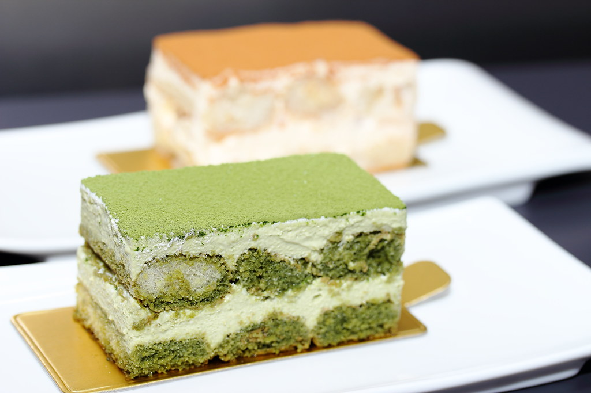

Matcha Tiramisu Recipe

Description
A rich and flavorful twist to the classic tiramisu, this dish will definitely be a party-favorite with just as much caffeine to keep everyone's energy up. The vibrant green color of the matcha is also appealing and will result in an empty dish to take home.
Despite being a relatively simple dessert to make, the matcha powder should be sourced from a high-quality company as it will determine the difference between a grassy tiramisu and a fragrant one. These can also be served in multiple ways: in one big dish,
in multiple smaller dishes, or even in something more unconventional such as a cup.
Ingredients:
- Egg Yolks
- Sugar
- Marsala Wine or Dark Rum/Brandy
- Mascarpone Cheese
- Heavy (whipping( Cream
- Water
- Matcha Powder
- Ladyfingers
Instructions:
- Set up a double boiler using a saucepan with water and a mixing bowl on top, and bring the water to a simmer.
- In the mixing bowl, add the eggs, wine, and sugar. Whisk.
- Place the bowl over the saucepan and continue to beat the mixture for ~10 minutes or until ir reaches 160 fahrenheit
- Then, set the bowl in an ice bath to stop it from cooking further. Leave for 1 minute.
- In another bowl, add the mascarpone and soften with a spatula, then add the egg mixture.
- Fold the mixture until just smooth. avoid over mixing
- Mix the whipped cream in another bowl with sugar until medium peaks
- Fold the whipped cream into the mascarpone until combined
- Using a small bowl, whisk the hot water and matcha together until no lumps and transfer to a flat pan.
- To assemble, soak the ladyfingers in the matcha mixture and lay them in one layer in a dish, alternating with mascarpone.
- Top the dish with the mascarpone cream and refrigerate for at least 4 hours, garnishing with matcha powder to serve.